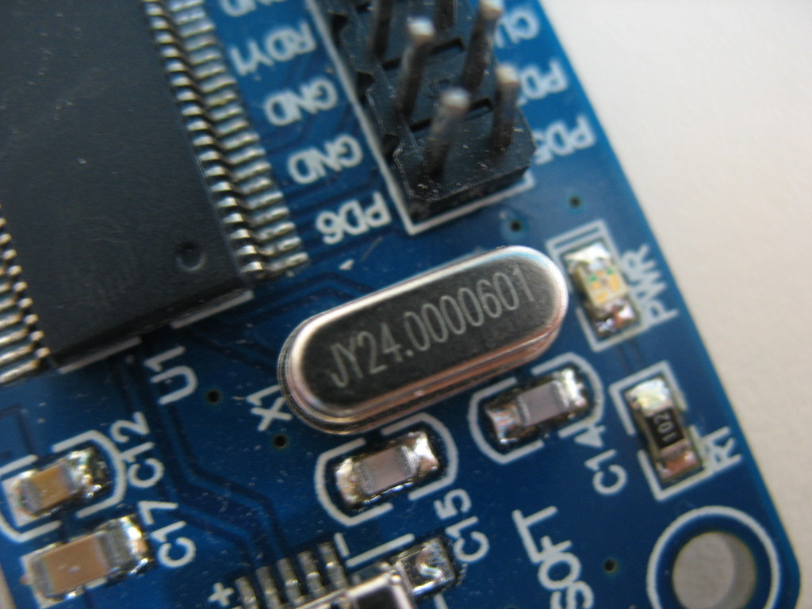
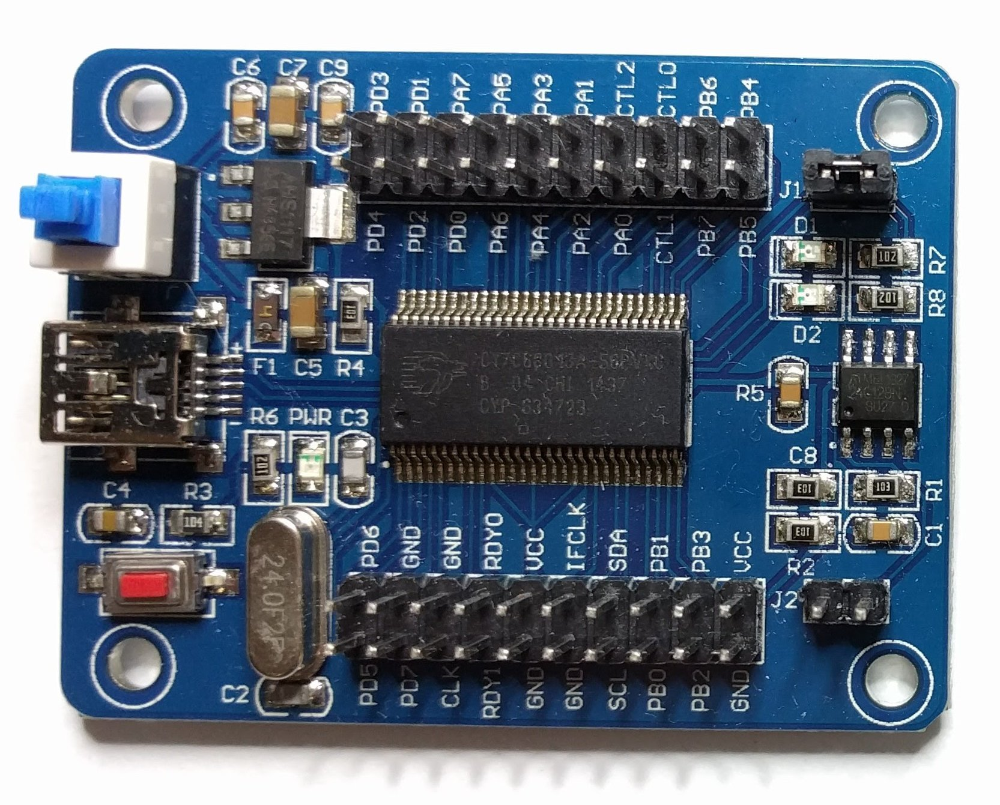
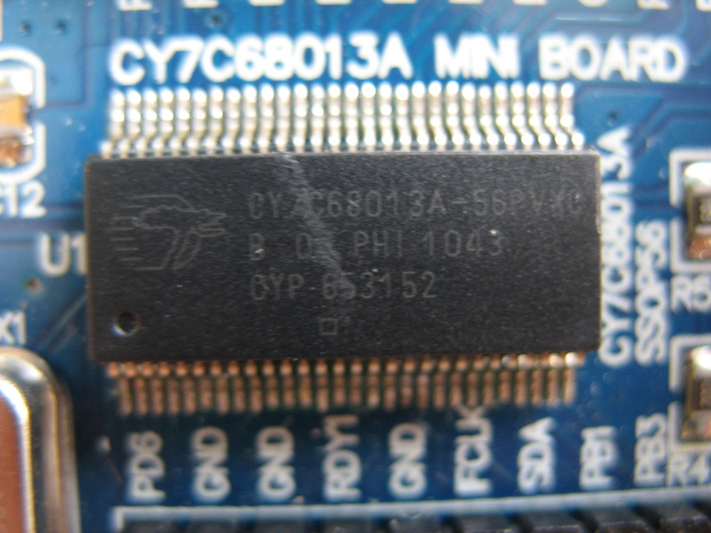
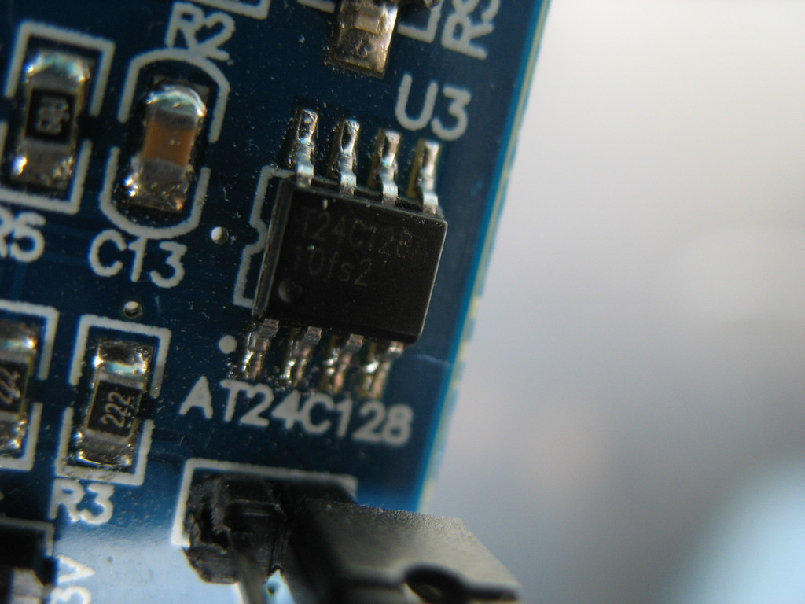
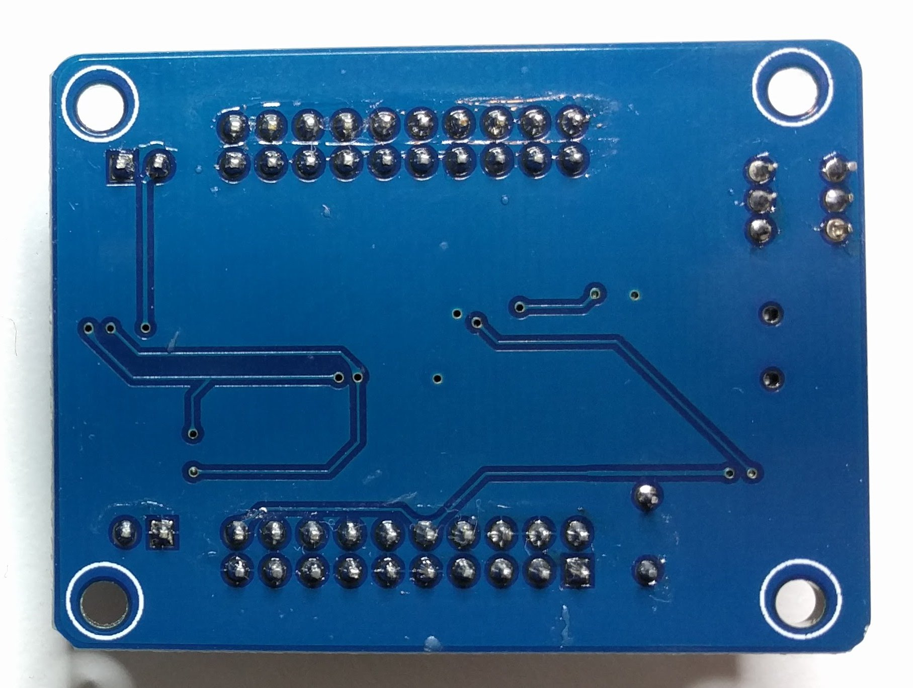

Lcsoft Mini Board¶

Lcsoft Mini Board¶
| Status | supported |
| Source code | fx2lafw |
| Channels | 8/16 |
| Samplerate | 24MHz |
| Samplerate (state) | — |
| Triggers | none (SW-only) |
| Min/max voltage | -0.5V — 5.25V |
| Threshold voltage | Fixed: VIH=2.0V—5.25V, VIL=-0.5V—0.8V |
| Memory | none |
| Compression | none |
| Website | lctech-inc.com, geeetech.com |
The Lcsoft CY7C68013A Mini Board is a Cypress FX2(LP) eval board, which can be used as USB-based, 16-channel logic analyzer with up to 24MHz sampling rate.
It is a clone of the Saleae Logic.
In sigrok, we use the open-source fx2lafw firmware for this logic analyzer.
See Lcsoft Mini Board/Info for some more details (such as lsusb -v output) on the device.
There is a very similar board made by Geeetech, it has near-identical components but a slightly different layout.
Hardware¶
- Main chip: Cypress CY7C68013A-56PVXC (FX2LP)
- 3.3V voltage regulator: Advanced Monolithic Systems AMS1117-3.3
- 16kB I2C EEPROM: Atmel AT24C128A
- 24MHz crystal: JY24.0000601
All the pins on the FX2(LP) are broken out to 40 header pins. There's an on/off toggle switch, a reset button, and a jumper that lets you select whether the FX2LP gets its configuration from a small EEPROM, or boots into the default mode. The EEPROM is usually provided programmed such that it enumerates with the same VID:PID as a Saleae Logic.
By default the chip will boot in some internal bootloader which allows loading (and executing) from USB to the internal RAM. Sigrok will typically use the fx2lafw firmware for this (aka "load-on-probe").
The EEPROM can be programmed with a firmware. The jumper allows to select whether the chip will boot on the EEPROM or the usual load-on-probe. This can be used for example to switch easily between a 16-channel (PB0-PB7, PD0-PD7) firmware and a 8-channel (PB0-PB7) one.
The Cypress has no DAC and can't by itself have any analog output. Other Cypress-based board have an external DAC, typically connected to 8 pins of the FX2, but this very one doesn't have any DAC.
Photos¶
Lcsoft Miniboard Front
 Lcsoft Mini Board Ams1117
Lcsoft Mini Board Ams1117
 Lcsoft Miniboard Back
Lcsoft Miniboard Back
 Lcsoft Mini Board Crystal
{kind=link}
 Geeetech Cy7c68013
{kind=link}
 Lcsoft Mini Board Fx2
{kind=link}
 Lcsoft Mini Board At24c128a
{kind=link}
 Lcsoft Fx2 Pcb Top
Lcsoft Fx2 Pcb Top
 Geeetech Cy7c68013 Back
{kind=link}
Protocol¶
Since we use the open-source fx2lafw firmware for this device, we don't need to know the protocol.
Possible issues¶
- With some kernel versions, and if the onboard EEPROM is disconnected (the jumper not connected) the kernel will automatically claim the device with a usbtest kernel module, seen in dmesg like usbtest 2-2:1.0: FX2 device — if this happens, sigrok will be unable to claim the device. Remove the usbtest kernel module as root to be able to use it:
$ **sudo rmmod usbtest**
You can add the usbtest module to a module blacklist permanently, at least in Debian-based distributions found in /etc/modprobe.d/blacklist.conf:
$ **sudo sh -c "echo 'blacklist usbtest' >> /etc/modprobe.d/blacklist.conf"**
Required testing hardware extensions¶
Do not directly hook the board pins to another circuit, if you don't know what you are doing! This could damage the board!
The simplest circuit would be adding at least resistors in between your circuit-in-test and the Lcsoft board, but be aware here that the Cypress FX2(LP) chip can only tolerate a maximum of 5V I/O. Better would be to use a clamp circuit like shown at Spiralbrain's Blog (but you do not need to add another EEPROM for sigrok with fx2lafw!) (and this clamp circuit does not protect the chip from voltages < -0.5 V). A buffer circuit using a 74HC241 IC¹ for protection is also possible. Check the fx2lafw page to see which protection circuits are used on other logic analyzer boards.
More information can be found in Circuits for barebone boards.
Resources¶
- Spiralbrain's blog: So your Saleae clone isn’t working with the new software?
- hAnix-diy: CY7C68013A USB Logic Analyzer
- Instructions for flashing the EEPROM on FX2 devices
- Second stage bootloader, Vend_Ax.hex
¹) with Vcc=2.8 V you get approx. VIL<=0.77 V and VIH>=2.03 V; with Vcc=5.0 V you get approx. VIL<=1.5 V and VIH>=3.5 V (interpolated from datasheet)